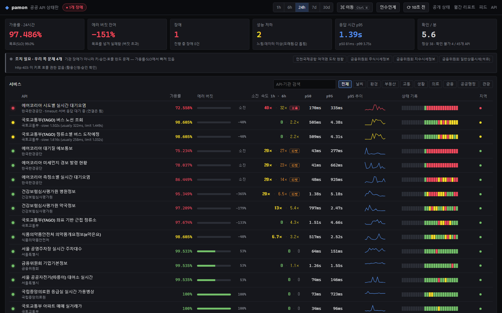

How it is put together구조
A Go scheduler on one GCP VM probes every target every 5 minutes, with a second vantage point pushing its results in; SQLite is replicated by Litestream, Prometheus watches the monitor itself, and the public site is served through a Cloudflare Worker.GCP VM 한 대의 Go 스케줄러가 5분마다 모든 대상을 확인하고, 다른 위치의 감시기가 결과를 보내옵니다. SQLite는 Litestream으로 복제되고, Prometheus가 모니터 자체를 감시하며, 공개 사이트는 Cloudflare Worker를 거쳐 제공됩니다.
Failure verdict장애 판정
Reads the result code inside the response body to decide whether it is a real outage, and excludes cases that are not the API’s own fault, such as an unregistered key or an exceeded call quota.응답 본문의 결과 코드까지 읽어 실제 장애인지 판정하고, 호출 키 미등록·호출 한도 초과처럼 API 자체의 문제가 아닌 경우는 제외.
Root-cause tracing원인 추적
Splits each request into DNS, TCP, TLS and server-wait phases to record where it stalled, and compares it with other APIs from the same agency to tell an agency-server problem from a network problem.요청을 DNS·TCP·TLS·서버 대기 구간으로 나눠 어디서 멈췄는지 기록하고, 같은 기관의 다른 API와 비교해 기관 서버 문제인지 네트워크 문제인지 구분.
SLOs & incident responseSLO·장애 대응
Calculates SLOs and error budgets per API, and provides incident records, postmortem drafts and runbooks.API별 SLO와 에러 버짓을 계산하고, 장애 기록·포스트모템 초안·런북을 제공.
Running it운영
Checks every 5 minutes from a single GCP VM, and the results are public on the website.GCP VM 한 대에서 5분마다 검사하고, 결과는 공개 웹사이트로 확인 가능.

The running status board (2026-10-19).실제 운영 화면(2026-10-19).